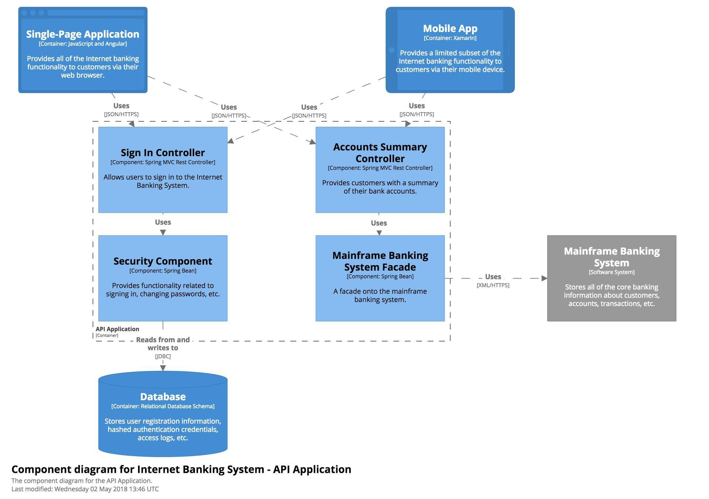

<!DOCTYPE html>
<html>
<head><meta name="generator" content="Hexo 3.9.0">
  <meta charset="utf-8">
  
  <title>如何画架构图 | 守株阁</title>
  <meta name="viewport" content="width=device-width, initial-scale=1, maximum-scale=1">
  <meta name="description" content="前言 有意义且具备一致性（coherence）的架构图有助于为不同的利益相关者（stakeholder）澄清事实，并达成共识。 一致性要求我们有足够好的指导原则，让我们知道标准的图元是什么。 “架构是一项复杂的工作，只使用单个图表来表示架构很容易造成莫名其妙的语义混乱”。 在同一个架构图里添加不同层级的抽象可能会导致冲突的出现，因为它们是从不同的角度描述问题的。 应该在架构图旁边加上图例。 架构图">
<meta name="keywords" content="系统架构">
<meta property="og:type" content="article">
<meta property="og:title" content="如何画架构图">
<meta property="og:url" content="http://yoursite.com/2021/05/07/如何画架构图/index.html">
<meta property="og:site_name" content="守株阁">
<meta property="og:description" content="前言 有意义且具备一致性（coherence）的架构图有助于为不同的利益相关者（stakeholder）澄清事实，并达成共识。 一致性要求我们有足够好的指导原则，让我们知道标准的图元是什么。 “架构是一项复杂的工作，只使用单个图表来表示架构很容易造成莫名其妙的语义混乱”。 在同一个架构图里添加不同层级的抽象可能会导致冲突的出现，因为它们是从不同的角度描述问题的。 应该在架构图旁边加上图例。 架构图">
<meta property="og:locale" content="zh-Hans">
<meta property="og:image" content="http://yoursite.com/2021/05/07/如何画架构图/total-diagram.jpeg">
<meta property="og:image" content="http://yoursite.com/2021/05/07/如何画架构图/context-diagram.jpeg">
<meta property="og:image" content="http://yoursite.com/2021/05/07/如何画架构图/container-diagram.jpeg">
<meta property="og:image" content="http://yoursite.com/2021/05/07/如何画架构图/component-diagram.jpeg">
<meta property="og:image" content="http://yoursite.com/2021/05/07/如何画架构图/code-diagram.jpeg">
<meta property="og:updated_time" content="2021-05-08T03:54:43.970Z">
<meta name="twitter:card" content="summary">
<meta name="twitter:title" content="如何画架构图">
<meta name="twitter:description" content="前言 有意义且具备一致性（coherence）的架构图有助于为不同的利益相关者（stakeholder）澄清事实，并达成共识。 一致性要求我们有足够好的指导原则，让我们知道标准的图元是什么。 “架构是一项复杂的工作，只使用单个图表来表示架构很容易造成莫名其妙的语义混乱”。 在同一个架构图里添加不同层级的抽象可能会导致冲突的出现，因为它们是从不同的角度描述问题的。 应该在架构图旁边加上图例。 架构图">
<meta name="twitter:image" content="http://yoursite.com/2021/05/07/如何画架构图/total-diagram.jpeg">
  
    <link rel="alternate" href="/atom.xml" title="守株阁" type="application/atom+xml">
  
  
    <link rel="icon" href="/favicon.png">
  
  
  <link rel="stylesheet" href="/css/style.css">
  

<link rel="stylesheet" href="/css/prism.css" type="text/css">
<link rel="stylesheet" href="/css/prism-line-numbers.css" type="text/css"></head>
</html>
<body>
  <div id="container">
    <div id="wrap">
      <header id="header">
  <div id="banner"></div>
  <div id="header-outer" class="outer">
    
    <div id="header-inner" class="inner">
      <nav id="sub-nav">
        
          <a id="nav-rss-link" class="nav-icon" href="/atom.xml" title="RSS Feed"></a>
        
        <a id="nav-search-btn" class="nav-icon" title="搜索"></a>
      </nav>
      <div id="search-form-wrap">
        <form action="//google.com/search" method="get" accept-charset="UTF-8" class="search-form"><input type="search" name="q" class="search-form-input" placeholder="Search"><button type="submit" class="search-form-submit">&#xF002;</button><input type="hidden" name="sitesearch" value="http://yoursite.com"></form>
      </div>
      <nav id="main-nav">
        <a id="main-nav-toggle" class="nav-icon"></a>
        
          <a class="main-nav-link" href="/">首页</a>
        
          <a class="main-nav-link" href="/archives">归档</a>
        
          <a class="main-nav-link" href="/about">关于</a>
        
      </nav>
      
    </div>
    <div id="header-title" class="inner">
      <h1 id="logo-wrap">
        <a href="/" id="logo">守株阁</a>
      </h1>
      
        <h2 id="subtitle-wrap">
          <a href="/" id="subtitle">一切都是守株待兔，如切如磋，如琢如磨。I am just joking.</a>
        </h2>
      
    </div>
  </div>
</header>
      <div class="outer">
        <section id="main"><article id="post-如何画架构图" class="article article-type-post" itemscope itemprop="blogPost">
  <div class="article-meta">
    <a href="/2021/05/07/如何画架构图/" class="article-date">
  <time datetime="2021-05-07T12:39:55.000Z" itemprop="datePublished">2021-05-07</time>
</a>
    
  </div>
  <div class="article-inner">
    
    
      <header class="article-header">
        
  
    <h1 class="article-title" itemprop="name">
      如何画架构图
    </h1>
  

      </header>
    
    <div class="article-entry" itemprop="articleBody">
      
        <!-- Table of Contents -->
        
        <h1 id="前言"><a href="#前言" class="headerlink" title="前言"></a>前言</h1><ul>
<li>有意义且具备<strong>一致性（coherence）</strong>的架构图有助于为不同的<strong>利益相关者（stakeholder）澄清事实</strong>，并达成共识。</li>
<li>一致性要求我们有足够好的指导原则，让我们知道标准的<strong>图元</strong>是什么。</li>
<li>“架构是一项复杂的工作，只使用单个图表来表示架构很容易造成莫名其妙的语义混乱”。</li>
<li>在同一个架构图里添加不同层级的抽象可能会导致冲突的出现，因为它们是从不同的角度描述问题的。</li>
<li>应该在架构图旁边加上图例。</li>
<li>架构图越多就越难以理解，而且维护起来也很费劲。最直接的后果就是有可能出现碎片化（比如，通过两到三个架构图来描述同样的质量属性——性能、伸缩性，等等——但每一个架构图都无法完整地描述它们）。在这种情况下，建议移除不能反映相关质量属性的架构图，或者把它们合并起来。</li>
</ul>
<h1 id="C4"><a href="#C4" class="headerlink" title="C4"></a>C4</h1><p>Context -&gt; Container -&gt; Component -&gt; Code</p>
<p><br><br><br><br></p>
<p>c4 意味着 4 个层次的架构图，自顶向下。</p>
<blockquote>
<p>C4 模型没有预定义任何特定的符号，你在这些示例图中看到的是一个个简单的符号，适用于白板、纸张、便签、索引卡片和各种图表工具。你也可以使用<br>UML<br>作为符号，并适当使用包、组件和原型。无论你使用哪种符号，我都会建议让每个元素都包含名称、元素类型（即“人”、“软件系统”，“容器”或“组件”）、技术选型（如果有的话），以及一些描述性文字。在图表中包含如此多的文本可能看起来很不寻常，但这些附加文本有助于消除软件架构图中通常会出现的不明确的表示。</p>
</blockquote>
<p>图元素里至少要包括：名称、类型、描述和其他属性。<br>线头至少包括：方向、多对多关系、动作（有时候包含宾语）。</p>
<h1 id="4-1-视图"><a href="#4-1-视图" class="headerlink" title="4 + 1 视图"></a>4 + 1 视图</h1><h1 id="漏斗图"><a href="#漏斗图" class="headerlink" title="漏斗图"></a>漏斗图</h1>
      
    </div>
    <footer class="article-footer">
      <a data-url="http://yoursite.com/2021/05/07/如何画架构图/" data-id="ckp141c8l00f4b14736h9px6k" class="article-share-link">分享</a>
      
      
      
  <ul class="article-tag-list"><li class="article-tag-list-item"><a class="article-tag-list-link" href="/tags/系统架构/">系统架构</a></li></ul>

    </footer>
  </div>
  
    
 <script src="/jquery/jquery.min.js"></script>
  <div id="random_posts">
    <h2>推荐文章</h2>
    <div class="random_posts_ul">
      <script>
          var random_count =4
          var site = {BASE_URI:'/'};
          function load_random_posts(obj) {
              var arr=site.posts;
              if (!obj) return;
              // var count = $(obj).attr('data-count') || 6;
              for (var i, tmp, n = arr.length; n; i = Math.floor(Math.random() * n), tmp = arr[--n], arr[n] = arr[i], arr[i] = tmp);
              arr = arr.slice(0, random_count);
              var html = '<ul>';
            
              for(var j=0;j<arr.length;j++){
                var item=arr[j];
                html += '<li><strong>' + 
                item.date + ':&nbsp;&nbsp;<a href="' + (site.BASE_URI+item.uri) + '">' + 
                (item.title || item.uri) + '</a></strong>';
                if(item.excerpt){
                  html +='<div class="post-excerpt">'+item.excerpt+'</div>';
                }
                html +='</li>';
                
              }
              $(obj).html(html + '</ul>');
          }
          $('.random_posts_ul').each(function () {
              var c = this;
              if (!site.posts || !site.posts.length){
                  $.getJSON(site.BASE_URI + 'js/posts.js',function(json){site.posts = json;load_random_posts(c)});
              } 
               else{
                load_random_posts(c);
              }
          });
      </script>
    </div>
  </div>

    
<nav id="article-nav">
  
    <a href="/2021/05/10/ElasticSearch-总结/" id="article-nav-newer" class="article-nav-link-wrap">
      <strong class="article-nav-caption">上一篇</strong>
      <div class="article-nav-title">
        
          ElasticSearch 总结
        
      </div>
    </a>
  
  
    <a href="/2021/04/12/结算问题/" id="article-nav-older" class="article-nav-link-wrap">
      <strong class="article-nav-caption">下一篇</strong>
      <div class="article-nav-title">结算问题</div>
    </a>
  
</nav>

  
</article>
 
     
  <div class="comments" id="comments">
    
     
       
      <div id="cloud-tie-wrapper" class="cloud-tie-wrapper"></div>
    
       
      
      
  </div>
 
  

</section>
           
    <aside id="sidebar">
  
    

  
    
    <div class="widget-wrap">
    
      <div class="widget" id="toc-widget-fixed">
      
        <strong class="toc-title">文章目录</strong>
        <div class="toc-widget-list">
              <ol class="toc"><li class="toc-item toc-level-1"><a class="toc-link" href="#前言"><span class="toc-number">1.</span> <span class="toc-text">前言</span></a></li><li class="toc-item toc-level-1"><a class="toc-link" href="#C4"><span class="toc-number">2.</span> <span class="toc-text">C4</span></a></li><li class="toc-item toc-level-1"><a class="toc-link" href="#4-1-视图"><span class="toc-number">3.</span> <span class="toc-text">4 + 1 视图</span></a></li><li class="toc-item toc-level-1"><a class="toc-link" href="#漏斗图"><span class="toc-number">4.</span> <span class="toc-text">漏斗图</span></a></li></ol>
          </div>
      </div>
    </div>

  
    

  
    
  
    
  
    

  
    
  
    <!--微信公众号二维码-->


  
</aside>

      </div>
      <footer id="footer">
  
  <div class="outer">
    <div id="footer-left">
      &copy; 2014 - 2021 magicliang&nbsp;|&nbsp;
      主题 <a href="https://github.com/giscafer/hexo-theme-cafe/" target="_blank">Cafe</a>
    </div>
     <div id="footer-right">
      联系方式&nbsp;|&nbsp;magicliang@qq.com
    </div>
  </div>
</footer>
 <script src="/jquery/jquery.min.js"></script>
    </div>
    <nav id="mobile-nav">
  
    <a href="/" class="mobile-nav-link">首页</a>
  
    <a href="/archives" class="mobile-nav-link">归档</a>
  
    <a href="/about" class="mobile-nav-link">关于</a>
  
</nav>
    
<script>
// Elevator script included on the page, already.
window.onload = function() {
  var elevator = new Elevator({
    selector:'.back-to-top-btn',
    element: document.querySelector('.back-to-top-btn'),
    duration: 1000 // milliseconds
  });
}
</script>
      

  
    <script>
      var cloudTieConfig = {
        url: document.location.href, 
        sourceId: "",
        productKey: "e2fb4051c49842688ce669e634bc983f",
        target: "cloud-tie-wrapper"
      };
    </script>
    <script src="https://img1.ws.126.net/f2e/tie/yun/sdk/loader.js"></script>
    

  


<!-- author:forvoid begin -->
<!-- author:forvoid begin -->

<!-- author:forvoid end -->

<!-- author:forvoid end -->


  
    <script type="text/x-mathjax-config">
      MathJax.Hub.Config({
        tex2jax: {
          inlineMath: [ ['$','$'], ["\\(","\\)"]  ],
          processEscapes: true,
          skipTags: ['script', 'noscript', 'style', 'textarea', 'pre', 'code']
        }
      })
    </script>

    <script type="text/x-mathjax-config">
      MathJax.Hub.Queue(function() {
        var all = MathJax.Hub.getAllJax(), i;
        for (i=0; i < all.length; i += 1) {
          all[i].SourceElement().parentNode.className += ' has-jax';
        }
      })
    </script>
    <script type="text/javascript" src="https://cdn.rawgit.com/mathjax/MathJax/2.7.1/MathJax.js?config=TeX-AMS-MML_HTMLorMML"></script>
  


 <script src="/js/is.js"></script>


  <link rel="stylesheet" href="/fancybox/jquery.fancybox.css">
  <script src="/fancybox/jquery.fancybox.pack.js"></script>


<script src="/js/script.js"></script>
<script src="/js/elevator.js"></script>
  </div>
</body>
</html>